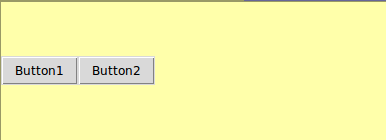

One important aspect of GUI design is the layout of widgets in an application.
In this problem you will lay out two buttons in a frame. Note that, although this problem uses buttons, the same layout ideas apply to any widget (including other frames).
You need to write a function create_layout that takes a frame as its only argument and adds two buttons at the left of the frame. The first (leftmost) button should have the label "Button1", and the other should have the label "Button2". The callback (command) for both buttons should be the pressed function.
There is no need to create a tk app (the root window and frame will be initialised for you).
You must use pack for layout and not grid.
The frame should appear as depicted below.

When you check your code a window should pop up showing your layout. Close the popup window before trying again or moving to a new problem.